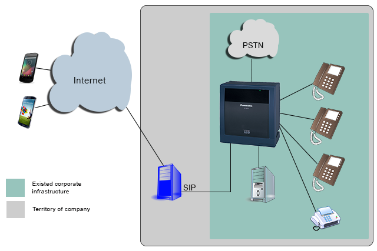

Privacy by default
Cryptia Secure Messenger

Cryptia allows users to make voice calls, share files and messages using a cryptographically strong encryption algorithms
View all versions
User manual
Communicate securely
cryptia for Android
cryptia for iOS
“This is not a telephone conversation” - how many times have you repeated this phrase? Say it no more. Cryptia offers security for real when it comes to private conversations - you won't be discussing private matters only to find the record on YouTube afterwards. Cryptia establishes direct encrypted connection between users which minimizes interception risk and reduces voice lag greatly. Also, Cryptia is great when it comes to live text chat. Message history is encrypted and then stored on your computer and nowhere else.


Create accounts with ease

Sometimes there is a need to keep several accounts – for instance, one to converse with friends, the other for work matters... It's easy! Create as many accounts as you wish and use them to your notice. Simple interface makes you use only one click to switch between the accounts – and you can even have several accounts opened simultaneously!
Each account is provided with a calling card to which your personal details and an image may be added. Liven up your card with a photo or add some presentability with your company's logo – it's up to you to decide how easy or how hard it would be for other users to discover or recognize your account.
Do not worry about confidential files
Forget fiddly key exchange procedures – as soon as direct encrypted connection is established, transferring important files becomes as easy as sending “Hello!”. And you can likewise rest assured your received files are kept safe – every account receives an encrypted file container, which is mounted every time a user enters his account and is unmounted upon exit. The file container itself is undecipherable without your password – a malefactor would gain nothing even if he or she manages to obtain the file somehow.

Work up an existing corporate infrastructure with Cryptia
Are you uneasy about being told confidential information over the phone? Do you want to discuss legal matters in camera? See to your clients' and partners' comfort – let them speak with you via secure connection. It is not an obstacle if your work flows perfectly aligned and you possess a ready-to-use infrastructure – because you are able to integrate Cryptia with an existing one. You won't face any additional cost due to restructuring or retraining your staff.

PGP alternative
Client part of the system is a worthy substitution for well-known encryption software PGP (gnupg), eliminating its conceptual problems. PGP is using the following scheme for messages encryption: Random session key is generated Messages are being encrypted with symmetrical algorithm, using the key obtained in step 1. The key itself is being encrypted with asymmetrical algorithm (EL Gamal-Encryption or RSA) and is being included in the message in the encrypted form. Such scheme has a fundamental defect. Imagine that intruder has the ability to register all of your sessions. Naturally, he is unable to decipher those. However, in case he ever obtains the access to the secret key, he would be able to decipher all of the messages he had saved earlier. In case of agreement of the keys under the Diffie-Hellman algorithm, the disclosure of the secret key would not lead to the deciphering of the messages saved earlier, since the secret session keys of the Diffie-Hellman algorithm exist only in RAM for a short period of time, they are not being sent or saved anywhere. In case if the earlier communication sessions are of any value, and PGP random key encryption scheme is used, the user runs the risk that intruders might “force” him to give away his secret key. And how bad can the consequences be if the word “forced” is being used? In case if the key agreement is made under the Diffie-Hellman algorithm, secret key for signature can be easily handed over on demand, without fear of deciphering of the old communication sessions.

In detail about the encryption in the Cryptia service >
-
The best place to find answers to frequently asked questions. Find Answers >
-
- What is Cryptia?
- Cryptia - it is a service, allowing the system subscribers to initiate voice calls (video calls in prospect), exchange files and messages, while being protected by the hacker-proof encryption algorithms. Client software is being distributed with the source code, allowing the experts to check the quality of session encryption, as well as to check for hidden capacities, loop-holes, etc. Client software versions for all of the well-known desktop operating systems are available, as well as for some smartphones (the list to be expanded).
- How safe is the encryption of the transmitted data?
- All of the traffic between the clients is being encrypted by the sender and deciphered by the recipient using the one-time session keys. The encryption is end-to-end - there is no re-encryption during the transmission between the sender and the recipient. Communication protocol guarantees the impossibility of the "man-in-the-middle" attacks. For more details see «Communication session encryption.»
- What is your benefit if the calls and the software are free?
- We plan to introduce a number of additional paid services, the calls and the software, however, shall remain free of charge. We are also selling corporate servers.
- What extra features do I get if buy a business account?
-
Normal account has some limitations:
1. The number of subscribers which can be connected throughout the day is limited to five. This means that during the day with the user account can be an unlimited number of times to chat with 5 subscribers (excluding subscribers with business account). To communicate with the sixth subscriber only possible on the following day.
2. It is requered for ordinary users to make a direct connection (chat) that both users have each other in the list of contacts (friends).
3. Size of the contact list for ordinary users is limited. Not more than 100 contacts.
Business accounts are exempt from these restrictions. Users with business account can be called (calls, send messages and files) by other users, without the need to mutual inclusion in the list of contacts, that gives you the opportunity to publish your login, for example on business cards or website. In the near future we plan to add a feature of secure data synchronization between devices. This feature will be available for business account only. - What functions does your server perform?
- Server helps the clients to establish the direct connection. If the clients are behind routers or firewalls, the mediator server accessible by both users is required to establish the connection between them. Also the server functions as the Certification Authority, signing the public keys of the users with its private key. For more details see «Communication session encryption.»
- What client information is being stored on your servers?
- Our servers' databases store the logins of the users as well as public user keys signed by us and certificate revocation lists from the users. Naturally, user action logs are being stored as well, but the server cannot tell the purpose with which direct connection was established by the clients. Maybe they connected only to send that smiley, or maybe for hours-long talk or files transmission. All these are being exchanged between the clients only, bypassing the server.
- What information is being sent by the client software to the server?
-
Client software sends the following data to the server upon entry:
- User Login.
- Digital Signature of the User or Password.
- Along with digital signature, serial number for public key certificate used to generate the signature is being transmitted as well.
- Client software version, as well as name and version of the user OS.
- Interface language set in the client software.
- List of logins of other users, whose entry/exit in or out of the network user would like to be notified of by the server (can be disabled via settings).
- Permission/Ban to the server to provide the other users with my public key (certificate) upon establishing the connection.
- NAT device type of the user.
- Internal IP-address of the user PC. (can be disabled via settings, but in that case the connections between the users using the same NAT device would be established in non-optimal way).
- Can I set up several Logins at your server to connect with different people?
- Yes, you can. You can use them at the same time as well.
- Is client software able to simultaneously maintain connections to the several servers, e.g. cryptia.com server and/or corporate server?
- Yes, it is able.
- In case if direct connection between subscribers is impossible to establish, all of the voice traffic would be sent via your relay-server. Is there a threat it could be intercepted in such case?
- Intercepted - yes, naturally, but not deciphered (as well as in any other point of network between the sender and recipient, e.g. your internet provider). Encryption is end-to-end - there is no re-encryption on the way from the sender to the recipient. Communication protocol guarantees the impossibility of the "man-in-the-middle" attack. For more detail, see «connection encryption».
- Why is your service unable to send short messages or files via the server, as in SMPP and Skype, and direct connection is required instead?
- It was done to guarantee your and our safety. In case if the message data and files are transmitted via the server, the server has to decrypt it with the session key of the sender and encrypt with the session key of the recipient. In such case the information can be intercepted at the server. We do not want to store on our servers ANY confidential information, which might be of interest to the third parties, unless it is required to ensure stable uninterrupted operation of our server. See the answer to the question: "What information is being sent by the client software to the server?"
- Why does your software ask me to switch off my anti-virus software and firewall?
- It is not so. Some firewalls, for instance Kaspersky Internet Security are attempting to scan the incoming traffic (possibly outgoing as well) for viruses. In case if the connection with the server is SSL encrypted, as it is our case, anti-virus software tries to "get in between". To do so, it requires installing into the operating system of its own security certificate. Cryptia client cannot tell the difference between "noble" anti-virus program and "intruder" one if both are trying to intercept the traffic, that is why, once we locate such interception attempt, we stop it. We recommend to set up an exception for the Cryptia software in your anti-virus or firewall software. For instance, in Kaspersky Internet Security you need to enable the option "do not scan the network traffic" for Cryptia.exe. We do not recommend turning off your anti-virus or firewall completely.
- Why non-latin symbols are not supported in the logins?
-
Indeed, Logins support only Latin letters, numbers, underline symbol "_" and dot. This was done due to a number of reasons.
- Server operation effectiveness.
- Hardly you would be able to tell the difference by sight between logins: "bank_of_muhosransk" and "bаnk_оf_muhosransk (latter login name has several Cyrillic symbols in it)
- If we are to allow any Unicode symbols - we are not sure that we would be able to at least read logins in specific languages, as we do not even know how the letters are written in those...
- Can I configure client Cryptia software to establish direct client connections via UDP, using the particular UDP port(s)?
- Yes, it is possible. Yet, since it is not a typical case, there is no such option in the settings menu and you would have to manually edit configuration file cryptia.ini. The same configuration file holds the commentaries on how to make such manual changes.
- Is it possible to transfer the client Cryptia software from one PC to another without reinstallation, and keep it on the portable data medium as well, e.g. USB flash drive?
- It depends on your OS. Client software for Windows is fully portable. Linux also allows that but in some distributives you might be required to install Qt 4 package. Symbian OS requires that program being run is installed on the device, but you can store in on the external SD card.
- What does sign "check code: XXXXX" which is shown in the direct connection window mean?
-
Check code - is your last stand.
Check code is a simple instrument for clients to check for "man-in-the-middle". For agreement of the session encryption keys Diffie-Hellman algorithm is used. As a result of the Diffie-Hellman algorithm work, both parties in the connection obtain agreed-upon key (the same one). The length of such key shall be equal to the parameters length of the Diffie-Hellman algorithm (minimum 1536 bits). Check code is calculated as follows: agreed-upon Diffie-Hellman key is being split into 16 bit blocks and all of them are XOR-ed with circular shift after each iteration. Naturally, the code should be matching on both sides. Such code is shown to the user in the window and users are able to check its authenticity verbally. Check code is not transferred via the network and is not stored anywhere. In case if someone manages to wedge himself in the middle, your check code would not match the check code of the user you are talking to.
In fact, such protection is redundant, since upon establishment of the connection, packages with parameters and public keys of the Diffie-Hellman algorithm are being signed by your private keys and checked by each party, using the public key of the other party.
In addition, using the direct connection window you can check the public key certificates of the other party as well as your ones used in the connection establishment. Also, one can check the authenticity of the certificates used verbally, for instance verbally check the serial numbers and thumbprints. - If anyone manages to spot the check code, will he be able to decipher the connection session?
- No, he won't. Try to see it this way - if anyone "snoops" the last digit of sum of all digits of your credit card number, would he be able to recover all 16 digits of card number?
- I was forced to give away my private key. Is it possible for those who have it now to decipher my old connection sessions, if they had intercepted them earlier?
- No, it is not possible. For agreement of the session keys Diffie-Hellman algorithm is being used, private keys for such algorithm are one-time only, they are not stored anywhere and are not sent via the network. Your private key is used for signing the message that holds the Diffie-Hellman algorithm public keys. Private Diffie-Hellman algorithm keys cannot be obtained from its public keys.
- I was forced to give away my private key and my contacts list. Will its present owners be able to connect my contacts and imitate me? What should I do?
- Of course, they will be able to. As soon as you have a chance you should use client software to send the request to revoke the public key certificate of the public key you were forced to give away. After that, "intruders" will not be able to use your account. To revoke the certificate you need to login to the server using your password, stated during the server registration process. For more details, see «Connection Encryption».
- Is it possible to intercept voice traffic of your service using the FinSpy software or similar ones, capturing the audio stream from the speakers or headphones and transmitting it to the network?
- Yes, it is possible. We are able to secure that the information is not intercepted via the network, but if the user's PC has spy software installed by someone, it is difficult to get protected from it. In fact, FinSpy software possibly might be tackled, but how can we protect you if such transmission devices are integrated into your headphones/keyboard and able to send the transmitted information or means of its registration over the distance?
- Which sets of parameters for Diffie-Hellman algorithm would you recommend to use? Which signature algorithms?
- We recommend to have set of parameters for Diffie-Hellman for elliptic-curve cryptography with 256-bit key length and set of parameters for Diffie-Hellman algorithm in integer field with 2048-bit key length, in case connection is made to the client who does not support elliptic-curve cryptography. For signature we also recommend to use elliptic-curve cryptography with 160-bit key length and have certificate with DSA parameters with 2048-bit key length. RSA signatures are also possible to use. Length of the signature key is not as important as the length of the Diffie-Hellman algorithm key, since there is only 20 sec. of time for attacking party to forge the signature (time period for one client to expect the package with signature from the other one). Even if forged within 30 seconds signature has no worth as it bears no risk to hijack the connection session.
- Why the software does not start up upon the Windows launch as Skype does? Are there related settings?
- It was done intentionally. If you store your private keys encrypted (recommended), then upon the start of the program you will be asked to provide the passwords for your private keys. The program would expect you to provide the password in any case. Automatic launch is possible only if you store your keys on the hard-drive in the open form, but we do not recommend doing so. In case if you still would like to have automatic launch and you are fully aware that during your absence your keys (and even your whole PC) might fall into the hands of malefactors, you can save your private keys in the open form and manually add Cryptia.exe shortcut to the StartUp menu.
- I have independently compiled the Cryptia client software based on the open source codes. Can I distribute it now?
- No, you cannot. It is stated in our end-user license agreement. Such limitation is made due to the following reason: We are not able to guarantee that the software version compiled outside our labs would be free from all interception and spying loop-holes. Also, the software version compiled outside our labs might have less strong security functions, whether it was unintended or made on purpose, which might damage our reputation. Therefore, we prohibit the distribution of the compiled software versions and source code, unless it is a publication from the Cryptia.com domain sites.
- I have independently compiled the Cryptia client software based on the open source codes. Can I use it now?
- Of course, you can. Moreover, if you are not a private individual but a corporation, you are entitled to use your compiled version on any number of the personal computers in your corporation (as well as subsidiaries) and such would not be considered as violation of the license agreement. You are also allowed to introduce any changes in the source code at your option and responsibility.
- Why source codes for Symbian client are not publicly available?
- Symbian OS software using the specific features of the operation system requires the Nokia signature. Cryptia client utilizes the MultimediaDD feature. Moreover, compilation of it is a very labor-intensive process. Even if you manage to compile the client software for Symbian it would not work on the real phone without Nokia signature. Also, such software does not work in Symbian emulator as it has no VoIPServer feature. In such conditions, publishing the source code beats the purpose. All server exchange and connections with the other clients in Symbian version are absolutely identical to those in desktop versions, and their source codes are already published.
- Why there is no source code for Register utility, responsible for registration of the new account on the Cryptia server?
- Register utility is launched from the client software at the first launch, and if the client does not have account on the Cryptia.com server yet, it allows the registration of such new account. For these purposes we use specific API, which we would not like to disclose to protect our server from spam. In addition, it performs the initial keys generation, however, the same can be done with the client software and you already have source code for it. Key generation feature has been integrated in this software only for convenience of the non-expert users.
Licenses
In detail about the encryption in the Cryptia service.
- Encryption of the connections between the client and the Cryptia server.
- Traffic between the client and the server is being encrypted using TLS v 1.1.
- Encryption of the direct connections between the clients.
-
Direct connection between the clients includes two UDP channels. One channel is used to send signal messages and files, another one is used for real time traffic (voice, video). Each of the channels is being encrypted with proven symmetrical encryption algorithm (by default AES-256, but it is possible to set up other algorithms included in the OpenSSL 1.0: AES-128, AES-192, BlowFish, Camelia-128, Camelia-192, CAST5, DES, TripleDES, IDEA, SEED and GOST 28147-89 as well. Encryption keys are single session ones. For agreement of the symmetrical session keys Diffi-Hellman algorithm or ECDH are being used, and to protect the Diffi-Hellman algorithm from attacks, the parameters and public keys exchanges are signed with digital signature of the clients, based on the asymmetrical algorithms (RSA, DSA, ECDSA).
Vital part is that the client independently generates the key pairs for asymmetrical algorithms and set of parameters for Diffi-Hellman algorithm. To generate it OpenSSL library integrated into the client software is being used, however, the subscriber is able to generate the keys independently with freeware utility OpenSSL, or any other similar tool, that he trusts to, and then import the keys to the client Cryptia software. Also there is a capability to export keys into the standard file formats for further analysis. - Symmetrical encryption
-
Symmetrical channel encryption modes are different. For signal channel CFB (cipher feedback) encryption mode is used.
For real time channel encryption CTR (Counter Mode) is used. The choice of the CTR mode was stipulated by the fact that we do not need to ensure 100% reliability of the packages delivery there. For voice applications, the transmission delay is much more critical. Correspondingly, we need to have the possibility to synchronize the cipher text for cases of package loss, instead of trying to achieve identity of the sent and received streams by continuously resending the packages. The size of the package with real time data being sent, is usually larger than the block size of the symmetrical encryption algorithm, therefore inside the package the blocks are being linked via OFB (output feedback mode) or CFB modes.
You can read more about encryption modes here:encryption modes
There are 4 ciphers and 4 initialization vectors used in the system. Two per each of the channels and different ones for data directions. Certain fragments of the output value of the Diffi-Hellman algorithm used for the creation of the agreed-upon session key are being utilized as cipher and initialization vectors’ values. - Diffi-Hellman algorithm (DH)
-
You can read about Diffi-Hellman algorithm in detail here: http://en.wikipedia.org/wiki/Diffie-Hellman
This algorithm is used in the Criptia.com client software to agree the session keys of the symmetrical encryption algorithms. Clients need to have a set of parameters for algorithm to work. Generation of the algorithm parameters is a long and resource-intensive process, that is why parameters are being generated in advance (independently by each user). This can be done with the generator integrated in the client software or using the freeware utility OpenSSL (openssl.org) or with any other utility of user’s choice. Generation of the 1024-bit long key parameters on the modern PC takes from dozens of seconds up to a minute, while generation of the 4096-bit long parameters might take up to several hours.
In its pure form, Diffi-Hellman algorithm is vulnerable to a “man-in-the-middle” attack, that is why to defend from such attacks, messages with the open session algorithm keys have to be protected from substitution (but not from the interception). For these purposes, the messages are being signed by each party with digital signature based on the asymmetrical algorithm. Moreover, the signature contains the unique connection number – random number created by the server and sent to the both parties via secure connection with the server. It was done to prevent hypothetical attack when the intruder simulates the key exchange messages saved earlier. - Digital signatures, private keys, certificate requests, certificates.
-
Digital signature algorithms are based on the asymmetrical cryptography. Each client independently generates a pair of his own keys (public / private). To sign the message digitally, the private key is required, while it is possible to verify the signature with the public key only.
The user independently generates his own pair of keys using the generator integrated into the client software version, or via freeware utility OpenSSL (www.openssl.org), or using any other utility he trusts to. However, in case if the user A has relayed his public key to the user not directly in person yet somehow via the network, how user B can be sure he has indeed received the user A’s public key? There could have been an intruder on the way of the key transmission, which could generate his own pair of keys and give his key to the user A instead of user B’s key, allowing him to interfere in the exchange.
This problem is eliminated with the public keys infrastructure (PKI).
Private key and public key are just set of parameters for the algorithm. Private key is safely kept by the user (it can be protected by the password to be entered any time the key is used) and the public key is to be distributed to the other users. However, it is unsafe to just transmit the set of parameters. The problem was mentioned above. To eliminate it, other user sends not just the set of parameters (namely, the public key) but a special file which contains, apart from the public key, the information whose key it is – key subject, as well as the digital signature and information who issued such signature (whose signature it is).
Such file is called “public key certificate” of the user. In order to retrieve the public key certificate from the public key, user creates a special file – “Certificate Request”, containing, apart from the public key, the information on the key subject, and sends such request file to the “Trusted Certification Authority” via the protected communication channel. Upon receipt of the file request for the certificate, “Trusted Certification Authority” creates a “public key certificate” of the user, including the information about itself (Issuer), expiry term of the certificate and its own digital signature.
But how can user verify the signature of somebody else’s certificate? Naturally, he has to have a public key (public key certificate) of the signing party to this certificate and the user has to trust such person (body). Or the certificate of the person who signed the certificate of the user is signed by the digital signature of the person the user trusts to. It is called chain of trust. Root certificate is a certificate at the end of the trust chain.
Also, there is a concept of the self-signed certificates. It means a certificate signed with its own public key. In practice such signature would get you nowhere, yet the certificate file complies with the corresponding specifications (presence of signature). Any person is able to create a self-signed certificate with the subject, e.g. Microsoft Corporation. Use of the client’s self-signed certificates is strongly non-recommended and is disabled in client Cryptia software by default setting. All root certificates are self-signed by definition. That is why you need to be very cautious while installing the root certificate. As a rule, root certificates are integrated into the devices or operating system by the manufacturer.
Cryptia.com server combines the functions of the connections server and the certification authority server. The cryptia.com server certificate is signed by the trusted certification authority and such trusted certification authority’s certificate is integrated into all versions of the client Cryptia software. - Certificate revocation.
-
Let us suppose that your private key was lost. Or even worse: you were forced to give it away by the intruder. A certificate of the public key corresponding to such private key was distributed among other users. How to get protection from unauthorized use of the private key? Of course, you could contact all those whom you have provided your public certificate with and ask to delete it but if you had no luck reaching some of them? It is much easier to revoke you certificate. You send your request for revocation to the certification authority and certification authority marks it in its database as revoked and enters it in the special certificate revocation list. The same procedure as with your lost passport – you are advised to write the statement of loss and the body that issued your passport in its turn would put it in the list of the lost passports. Before using unknown certificate, client software has to verify if it were not revoked. There are several ways to do it.
CRL (Certificate revocation list). Certification authority creates the list of the revoked certificates and grants users with the free access to it.
CRL delta. Similar to CRL, but the client receives not the whole list but only updates of the list, starting from the certain date. It is suggested that the client keeps older list records.
OCSP (Online certificate status protocol). Protocol for the online certificate status validation. Client connects to the certification authority server and requests the status of the particular certificate. Since the Cryptia server combines the functions of the connections server and certification authority server, it sends to the client the certificates revocation list of the other client at the moment the connection to him is attempted. It was done to increase the efficiency and to reduce the network traffic. - Mechanism of the establishment of the direct encrypted connection between the clients.
-
In order to establish the direct connection between the clients A & B the following is required:
Client A initiates the connection.
Client A has to have the generated set of parameters for DH (ECDH) algorithm (or several sets of parameters)
Client A has to have a public key certificate of the Client B (or several certificates)
Client B has to have a public key certificate of the Client A (or several certificates)
Client A and Client B have to be connected via the Cryptia server.
1. Client A sends to the Cryptia server the message indicating that he wishes to establish the direct connection with the Client B. The server generates the random number which serves as an ID for this session. The server sends the message to the Client B containing such session ID and requesting from the Client B his temporary UDP port numbers for this session.
2. Client B saves the session ID, opens the temporary UPD ports for connection and sends them to the server.
3. The server sends to the Client A the current IP address of the Client B and his port numbers, obtained in step 2. As well as session ID. All following steps are taken between the Clients A & B directly, bypassing the server.
4. Client A sends to the Client B the message containing the list of his certificates, list of the Client B’s certificates in his possession, list of supported symmetrical algorithms (in order of preference) and list of hash function results from his sets of parameters for DH (or ECDH).
5. Client B chooses the certificate he already has from the list of the Client A’s certificates received, chooses one of his own certificates that are present in Client A’s list, and chooses first supported algorithm from the list of supported symmetrical algorithms, and also looks into his DH parameters cache for set of parameters for Client A with the same hash value as those sent to him by the Client A. Client B sends to the Client A indices of the chosen certificates, symmetrical algorithm and, if any, index of the set of DH parameters of the Client A found in his own system.
6. Client A sends to the Client B the message containing the following fields:
DH parameters, in case if the Client B could not find those in his cache. If parameters were found by the Client B, Client A does not send them. Own public key, calculated with the chosen set of DH parameters. Generated secret DH key is stored in RAM. Digital signature, calculated with the chosen set of DH parameters, public DH key and unique session ID, obtained in step 3. Digital signature is made based on the private key from the pair of keys for which certificate was found by the Client B in step 5.
7. Client B verifies the message signature. To verify the signature public key is used from the Client A’s chosen certificate. If the signature is validated, Client B generates his secret session DH key, calculates its own public DH key with it, and also calculates the agreed-upon key from his own secret key and public key of the Client A, and sends to the Client A the message containing his public DH key as well as signature of his public DH key. Signature is made with private key from the pair of keys, for which Client A has certificate for. (Agreed upon in steps 4 & 5).
8. Client A verifies the message signature. For validation public key is used from the certificate that Client B has chosen and had sent to the Client A in step 5. If the signature is successfully validated, Client A calculates the agreed-upon key with its secret DH key and public DH key of the Client B.
Further on, all the traffic between the clients is sent in encrypted form based on the symmetrical algorithm agreed upon in steps 4 & 5.
Notes:
1. Steps 1 through 3 are provided in a strongly simplified form, important for understanding the cryptography basics. In real system during these steps a number of service exchanges is made between the server and each for the clients for NAT traversal. From the cryptography point of view it is crucial that after the finalization of these operations, Clients A & B have same session ID obtained from the server via the protected channel, Client A has external IP address and knows Client B ports, and network infrastructure is “ready” to deliver packages from A to B (NAT traversal through tunneling).
2. Long-term session resistance to hijacking is determined by the length of the DH (ECDH) algorithm key and not by the key that is used for digital signature. Key that is used for digital signature does not need to be very long, as the intruder has only about 20 seconds to forge the signature (time period during which client software is waiting for a reply from the other client). Signature forged within 1 minute has no value whatsoever and does not bear the risk of the session hijacking.
3. Server is not aware and has no means to find out which set of DH (ECDH) parameters and what keys were used to establish the connection since all of these parameters are relayed from the client to client directly.
4. DH (ECDH) parameters are relayed from the initiating client to the client-recipient in the open form which bears no risk, however it is done so only at the first session established. Client-recipient stores the received DH (ECDH) parameters in its cache and such parameters will not be relayed during the following sessions. There is a possibility to manually put the set of parameters into the cache. In such case DH (ECDH) parameters will not be transmitted in the open form at all and the intruder would have to solve the equation in three unknowns, while such an equation (A=g^a mod p) even in one unknown can be solved only by the exhaustive method, which makes no sense.
5. Steps 4 and 5 mention the “list of certificates”. In fact, the certificates themselves are not being sent, only SubjectKeyID values from the certificates are sent, which are the hash function values, calculated based on the certain certificate field values.
6. If the key agreed-upon with DH (ECDH) algorithm is shorter than 1536 bits, required to use four 256-bit ciphers and four 128-bit initialization vectors, in such case the cryptographically secure pseudo-random sequence generator is used, utilizing the AES algorithm, and the value created with DH (ECDH) algorithm is used as a key for AES (as well as initialization vector).
7. During the steps 1 through 3 the server also sends out to the clients the certificate revocation list of the other party, if any, and client software does not attempt to use them further on. - Check Code
- Check code is a simple tool for users to check for presence of the “man-in-the-middle”. As a result of the DH algorithm operations both parties to the session will obtain an agreed-upon key (the same one). The length of such key will be equal to the length of the set of parameters for DH algorithm (minimum 1024 bits). Check code is calculated as follows: agreed-upon DH key is split into 16-bit blocks and all of them are XOR-ed with circular shift after each iteration. Naturally, the resulting code should be same on both ends. Such code is shown in the window to the user and the users can check if those match orally. Check code is not sent via the network and is not stored anywhere. In fact it is redundant security.
- Advantages of the keys agreement with DH algorithm over the random key encryption with the asymmetrical algorithm (PGP, etc.)
-
PGP (GNUPG) is also using symmetrical algorithms to encrypt files, using the random session key as an encryption key, which, in its turn, is encrypted with the asymmetrical algorithm (EL Gamal-Encryption or RSA). Such scheme has a fundamental defect:
Let us suppose that the intruder has a possibility to register all of your sessions. Naturally, he would not be able to decipher those in either case. However, if he ever manages to obtain the access to the secret key, he would be able to decipher all of the earlier stored messages, in case if the encryption was made via the second option (PGP, etc.). In case if key agreement with DH algorithm is used, disclosure of the secret key would not lead to deciphering of all of the earlier stored messages, since the secret session keys of the DH algorithm are stored in RAM for a limited period of time only and are not relayed or saved anywhere else. If old sessions are of any value to you, in case of using the random key encryption option you have the risk that intruders would attempt to “derive” your secret key. How unpleasant actions related to the word “derive” can become – it is for you to decide. In case of using the option of the key agreement with DH algorithm, you are free to give away your secret key upon request, without fear of your old sessions being deciphered. - Client certificates issuance policies for Cryptia service.
-
Request for obtaining the certificate are accepted only via the protocol integrated in the client software.
User sending out the request for certificate has to successfully pass the authentication at the server using the password and other pair of keys. CommonName (CN) field of the certificate has to match user Login on the server. Requests in which CN field does not match Login are refused.
All of the values from the Subject field are cleared except CommonName (CN). Server signs only something it can verify.
Certificate serial number has 64 bits.
Date of certificate issue is set at the current time at the moment of certificate generation.
Extended certificate fields (X509 Extension) contain the following data:
Key Usage: Digital Signature.
Subject Key Identifier: HASH SHA1.
Basic constraints: CA: FALSE
Authority Key Identifier: HASH SHA1 – Subject Name
Certificate request can be revoked only prior finalization of the generation of the certificate by the server. After that, only certificate itself can be revoked.
Certificate revocation requests are accepted only via the protocol integrated into the client software.
User sending out the certificate revocation request has to successfully pass the server authentication.
After finalization of the certificate revocation procedure it is impossible to convert its status back to normal.
Versions
Cryptia client x86 for Debian based Linux distro
Cryptia client x86 for RPM based Linux distro
Cryptia client x64 for Debian based Linux distro
Cryptia client x64 for RPM based Linux distro
Cryptia client for Mac OS X
Cryptia client for Windows
Cryptia Secure Storage

Protect document stored in your mobile device in case of theft, loss or other problems.
Cryptia Secure Storage securely encrypts your files in mobile devices. There are versions for iOS (iPhone, iPad, iPod) and Android.
Download user manual


Validated technology
Use Truecrypt proven technology to protect data on your mobile device.
Documents handling from the container
Protected View and edit documents of Microsoft Office, PDF, images and videos stored in the container.


- Why is your product better than many free encryptors?
-
iOS: Formally program for iOS (without JailBreak) do not have access rights to read the files from the documents folder of foreign programs. In other words, the program can only read files from own Documents folder. According to this principle works most of the free or low-cost programs. The application asks for a password before opening access to their Documents folder. Unfortunately, the data can be read by specialized software (iExplorer for example), or using JailBreak.
Android: There are many amateurish programs that put the file attribute "hidden" and it does not show the standard file management . Can be downloaded from PlayMarket alternative file managers that will show all hidden files . Withdrawal from the device sdcard and its connection to the PC will also allow everyone to see. There are programs that allow you to create a full TrueCrypt container and mount it in the system , but they need to work with the device powers root. This device with custom firmware , with no warranties , and no updates from the manufacturer . - Why your product is better than storing data in the cloud?
-
Storing data in the cloud, especially if it is a Mega cloud - a good solution, in which a lot of advantages and two significant drawbacks.
- Data is inaccessible if you offline.
- For editing/view documents from the cloud its creates a local copy of data that can be read in case of access to your device.
- What is TrueCrypt?
- Wikipedia link
- If I do not trust the quality of your implementation of TrueCrypt, can I use the official free utility for generating container and then upload it to device?
- Yes you can.
TrueCrypt container must be generated using the algorithm AES256, hash-RIPEMD160, file system - FAT32, without the use of key files. In the device under iOS container must be loaded using iTunes into the program Documents folder and have the file name "container". In a device with Android container must be loaded into the folder /sdcard/data/com.cryptia.storage.pro/containers. The file name can be anything. For the free version - /sdcard/data/com.cryptia.storage.free/containers. The file name must be "container". - Why your container mounted on Android do not see other file managers?
- Because it is impossible for not modified Android device. To mount the file system, the user must have the root authority, which is not present in the factory firmware of Android. To work with files in our container requires a file manager built into our program. Opening files from the container also possible only using the file manager built into our program.
- How would you comment on the message about hacking TrueCrypt, PGPDisk ...?
- Read carefully the description of these solutions:
Acquiring Encryption Keys
Generally, the choice of one of the three attacks depends on the running state of the PC being analyzed. It also depends on whether or not installation of a forensic tool is possible on a PC under investigation. If the PC being investigated is turned off, the encryption keys can be retrieved from the hibernation file. The encrypted volume must be mounted before the computer went to sleep. If the volume is dismounted before hibernation, the encryption keys may not be derived from the hibernation file.
There is no hibernation file In iOS and Android.
If the PC is turned on, a memory dump can be taken with any forensic tool if installation of such tool is permitted (e.g. the PC is unlocked and logged-in account has administrative privileges). The encrypted volume must be mounted at the time of memory dump acquisition.
Note that in this case can be completely seamlessly copy the entire contents of the container into the unprotected area of the disc using standard tools. Сontainer's key itself in this case is of purely academic interest.
Finally, if the PC being investigated is turned on but installing forensic tools is not possible (e.g. the PC is locked or logged-in account lacks administrative privileges), a remote attack via a FireWire port can be performed in order to obtain a memory dump. This attack requires the use of a free third-party tool (such as Inception: http://www.breaknenter.org/projects/inception/), and offers near 100% results due to the implementation of FireWire protocol that enables direct memory access. Both the target PC and the computer used for acquisition must have FireWire (IEEE 1394) ports.
Obviously, such technology is not suitable for devices with Android and iOS.
Cryptia Security Suite for Windows also use TrueCrypt containers, but we are forced to dismount it when the computer goes into sleep or hibernate state and thus clear the keys in the RAM. - Is it possible to read information from your container using JailBreak of iPhone or using the following tool http://forensic.belkasoft.com/en/bec/
- The Container file itself can read but the contents can not.
- Is it safe to put the whole container in the cloud storage?
- Yes it is safe. Perhaps someone will be able to access the entire container file, but will not be able to decrypt it.
- What is a secure file and containers deletion? Why do it?
-
When you delete a file from the file system, in fact, the contents of the file remains on the disk/memory card, simply sector held this file are marked as free. The file can be restored using a variety of tools. To delete a file without any possibility of recovering, it is necessary to overwrite before deleting several times. It's a long process, a relatively simple removal.
Similarly, a file container. The difference is that the file container there are several sectors, rewriting of which makes completely impossible to restore data from the container. We overwrite these sectors at a safe removing of the container. Dubbing the container of several gigabytes several times would take a very long time (several times more than the actual creation of the container). - Can I configure my email program for Android to work with your container?
- Sending files from the container is possible using any email program. If you are still interested in the protected storage of contacts, correspondence and attachments we recommend you use Cryptia Secure Mail.
- Is it safely to upload/download files to / from the container through WIFI / WEB-interface? Is it possible to intercept it?
- Unsafe. Intercept is theoretically possible, although WIFI network has built-in encryption.
- Can anyone connect via WIFI to my device and download files from the container without my permission?
- No, They can not. Built-in WEB server does not accept incoming connections, if you are not in the tab "WEB server". In addition, an attacker need to know the address of the page for a one-time entry.
- How to create a secure eco-system to work with confidential documents under iOS?
- Unfortunately our program for iOS can not safely remove the files that other programs are sent to the container. It is unlikely that all the programs for iOS will be built-in means of secure deletion. When a file that stored in the container sent by standard means, such as a standard e-mail program, it is copied into the open form in the Documents folder, and it can be recovered from there. To confidential documents were not present on the disk in the clear, you need use fo transfer them "secure applications". For example, to send and receive them with Cryptia Security Messenger / Security Suite.
- What is the difference in security modes Cryptia Secure Storage for Android?
-
• Maximum security
In this mode, the file can only be opened using a special editor/viewer that does not create temporary copies in unprotected memory.
• Recomended level
In this mode, you can open the file for editing in a large number of standard programs ( but not all ). In an unsecured area creates a temporary copy of the file and it is removed ( securely overwritten ) immediately after an external editor read file and close it . After saving the file by external editor, the modified file is copied back to the container, and an unprotected copy securely destroyed. Unfortunately, some programs are not compatible with this mode, as they repeatedly open and close the file in the process of editing. In particular does so well-known suite KingSoft Office.
• Maximum compatibility
In this mode, you can edit/view the file using any standard program to work with files of this type.
In an unsecured area creates a temporary copy of the file, which remains there until an external editor closes the file.
Copy safely removed for the following events:
- 1. Secure Storage ended(permanent or crash). Responsible for the removal of built-OS service.
- 2. Container was dismounted.
- 3. File of temporary copy was open for writing, then closed. We consider this fact as finished editing. In this case, the modified version will be moved into the container.
Cryptia SIP Gateway
Enterprise solution for companies looking to integrate secure communications with customers in the existing infrastructure.
Integrate secure solutions into existing corporate infrastructure
Usually there is a telephone infrastructure and streamlined business processes in the working companies. This solution allows to implement a secure voice communications without changing the working infrastructure and retraining staff. Corporate client installs our software to the server, that converts the protected traffic from the Internet to unprotected SIP traffic and gets it to his PBX. Almost all new PBX supports SIP. Even if the client's PBX does not support SIP, there are enough solutions in the market that convert SIP traffic to the regular phone lines, which are suitable for any PBX..
The solution is a daemon on Linux or FreeBSD.

As can be seen from the diagram, the server cryptia-sip gateway has two interfaces. One of them is directed to the internet, and the second to the internal SIP network of the company. It is assumed that the server is physically located in the territory of the company and therefore the internal network information is transmitted unencrypted.
Business Accounts
“Do not skip nothing
”
• Your contacts will be able to send you files and messages even when you are offline. The entire correspondence is encrypted from the sender to the recipient without the possibility of decryption on the intermediate servers.
• Hiding your IP.
• Unlimited size of your contact list.
• Publish your contacts in the Internet and on business cards. (You will be able to receive messages, files, voice calls from users who are not in your contact list. It is possible to place on your site a button “Call us secure” also.)
Individual
| Packets | price |
|---|---|
|
Corporate certification server (CA) Advantages: Total control of cryptography. Server can be hidden (behind NAT). Disadvantages: In case of traffic goes through the relay server on the server can remain meta- information such as: the number of bytes / packets sent / received. |
US$499/year |
|
Corporate relay server Advantages: The meta-information about the connections is limited only by the fact of the connection between subscribers with date and time. Disadvantages: The server must have a direct IP address. Requires server administrator. |
US$399/year |
|
Corporate storage server Advantages: Total control of all of the received messages/files. Disadvantages: The server must have a direct IP address. Requires server administrator. |
US$499/year |
| Corporate certification server + Corporate relay server | US$850/year |
| Corporate certification server + Corporate relay server + Corporate Storage server | US$999/year |
|
Corporate servers (Full pack) Disadvantages: Unable to connect subscribers that are not in your corporation. It takes a skilled administrator. |
- |
| Customized clients with the customer logo and the desired option | - |